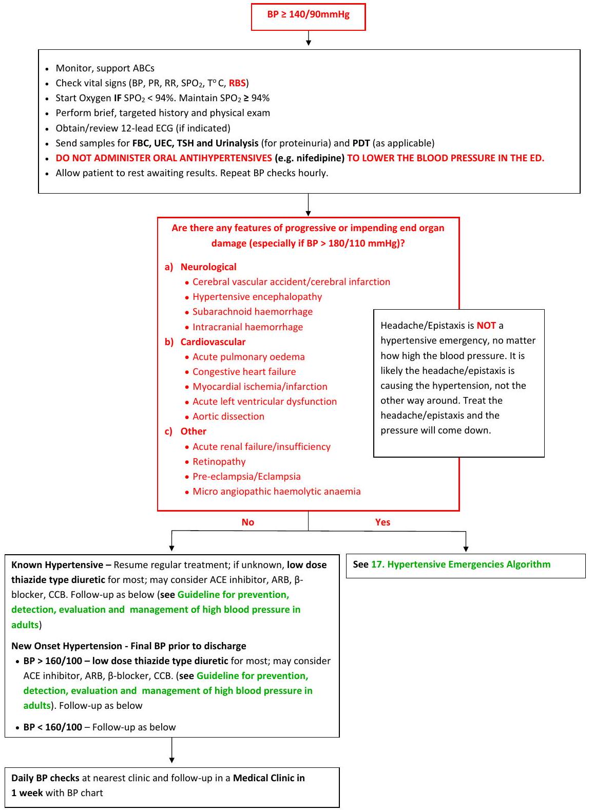

Cardiac Emergencies
11. Chest Pain (Acute Coronary Syndrome) Algorithm
This clinical pathway is intended to supplement, rather than substitute for, professional judgment and may be changed depending upon a patient's individual needs. Failure to comply with this pathway does not represent a breach of the standard of care.
Chest Discomfort Suggestive of Ischemia
(includes anginal equivalents (atypical symptoms) like exertional pain in the ear, jaw, neck, shoulder, arm, back, or epigastric area; exertional dyspnoea; nausea and vomiting; diaphoresis; and fatigue.
- Monitor, support ABCs in the Resuscitation Room (ER). Be prepared to provide CPR, Defibrillation and ?Thrombolysis/Fibrinolysis
- Obtain/review 12-lead ECG within 10 minutes of arrival to ED
- Do a V4R if ST elevation in lead V1 with simultaneous ST depression in V2 -? Right sided STEMI
- Do V7-V9 if ST depressions ≥ 1 mm with upright T-waves in ≥ 2 contiguous anterior precordial leads (V1 to V3) -? Posterior STEMI
- If there is ST elevation in aVR ≥ 1 mm and aVR ≥ V1 with widespread horizontal ST depression, most prominent in leads I, II and V4-6 - consult an Interventional Cardiologist immediately for PCI (Left main coronary artery occlusion/Proximal LAD lesion/Severe sub endocardial ischaemia, nonlocalized)
- Sinus Tachycardia, T wave inversion in III & V1, V3 or (S1, Q3, T3) pattern -? See 15. Pulmonary Embolism Algorithm
- Check vital signs (BP, PR, RR, SPO2, T °C, RBS)
- Start Oxygen IF SPO2 <90% or if patient is dyspnoeic. Maintain SPO2 ≥ 90%
- Perform brief, targeted history, physical exam - Indicate time of symptoms onset
- Consider other life-threatening causes of chest pain (pulmonary embolus, cardiac tamponade, aortic dissection, tension pneumothorax, oesophageal rupture)
- Review initial 12-lead ECG
Sequence of ECG changes seen during evolution of myocardial infarction - In the early stages of acute myocardial infarction the electrocardiogram may be normal or near normal; < 1/2 of patients with acute myocardial infarction have clear diagnostic changes on their first trace. About 10% of patients with a proved acute myocardial infarction (on the basis of clinical history and enzymatic markers) fail to develop ST segment elevation or depression. In most cases, however, serial electrocardiograms show evolving changes that tend to follow well recognised patterns.
*LAD, Left Anterior Descending; RCx, Right Circumflex; RCA, Right Coronary Artery; LCx, Left Circumflex; V4R, Right sided V4.
-Sgarbossa's Criteria for patients with Left Bundle Branch Blocks (LBBB) available in MDCalc
12. STEMI Algorithm
This clinical pathway is intended to supplement, rather than substitute for, professional judgment and may be changed depending upon a patient's individual needs. Failure to comply with this pathway does not represent a breach of the standard of care.
- Attach the patient to a DEFIBRILATOR
- Establish IV access in left forearm or antecubital vein and send blood samples for UEC, & hsTroponin
- Aspirin 300mg to chew (if not given by EMS, not allergic, no active upper GI bleeding or retinal bleeding, not a haemophiliac)
- Nitroglycerin sublingual spray 0.4 mg SL for pain relief every 5 mins up to relief of discomfort or MAX 3 doses reached. DO NOT give nitroglycerin if:
- SBP < 90 mmHg (or 30 mm Hg below the patient's known baseline),
- Heart rate > 100 bpm, or < 50 bpm.
- Right ventricular infarction (right ventricular infarction causes a preload dependent state)
- Use of sildenafil or vardenafil within the previous 24 hours or tadalafil within the previous 48 hours.
- Fentanyl 50 µg IV if pain is NOT relieved by the 3 doses of SL nitroglycerin. Repeat once if still in pain after 5 mins. For persistent pain, consult a Cardiologist/Physician. Consider IVI Nitroglycerin (see C/I above)
No contraindications for Thrombolysis/Fibrinolysis
- Obtain informed consent for fibrinolysis/thrombolysis
- Ensure patient is connected to a defibrillator (ECG, SPO2, BP) and repeat baseline vitals. Administer fibrinolysis/thrombolysis within 10 mins of STEMI diagnosis
| Fibrinolytic Agent | Dose | Fibrin Specificity* | Antigenic | Patency Rate (90-min TIMI 2 or 3 flow) |
|---|---|---|---|---|
| Fibrin-specific: | ||||
| Tenecteplase (TNK-tPA) | To reconstitute, mix the 50-mg vial in 10 mL sterile water (5 mg/mL). Give IV bolus based on weight as below: <60 kg - 30 mg (6 mL) 60 to 69 kg - 35 mg (7 mL) 70 to 79 kg - 40 mg (8 mL) 80 to 89 kg - 45 mg (9 mL) ≥ 90 kg - 50 mg (10 mL) |
++++ | No | 85% |
| Reteplase (rPA) | 10 U + 10-U IV boluses given 30 min apart | ++ | No | 84% |
| Alteplase (tPA) | not to exceed 100 mg. | ++ | No | 73% to 84% |
| Non-fibrin-specific: | ||||
| Streptokinase | Set up second IV line for the Streptokinase. The adult dose of streptokinase for STEMI is 1.5 Million U in 50 mL of 5% dextrose in water (D5W) given IV over 30-60 minutes. Allergic reactions force the termination of many infusions before a therapeutic dose can be administered. Run Ringer's Lactate/Hartmann's Solution TKVO in other line | No | Yes§ | 60% to 68% |
| *Strength of fibrin specificity; "++++" is more strong, "++" is less strong. §Streptokinase is highly antigenic and absolutely contraindicated within 6 mo of previous exposure because of the potential for serious allergic reaction. IV indicates intravenous; rPA, reteplase plasminogen activator; TIMI, Thrombolysis In Myocardial Infarction; TNK-tPA, tenecteplase tissue-type plasminogen activator; and tPA, tissue-type plasminogen activator. |
||||
- Monitor vital signs (BP, PR, RR, SPO2) every 15 minutes during the infusions
- Continue monitoring patient for 30mins after the end of the infusions
- Transfer patient to CCU/ICU CONNECTED TO A DEFIBRILLATOR
13. NSTEMI/Unstable Angina Algorithm
This clinical pathway is intended to supplement, rather than substitute for, professional judgment and may be changed depending upon a patient's individual needs. Failure to comply with this pathway does not represent a breach of the standard of care.
ST depression > 0.5mm or dynamic T-wave inversion ≥ 2mm; strongly suspicious for ischemia
High-Risk Unstable Angina/Non-ST-Elevation MI (UA/NSTEMI)
Normal or Non-diagnostic changes in ST segment or T wave
Intermediate/Low Risk UA
- Establish IV access and send blood samples for UEC, & hsTroponin (obtain hsTroponin at least 4 hours after symptom onset, not before)
- Aspirin 300 mg to chew (if not given by EMS, not allergic, no active upper GI bleeding or retinal bleeding, not a haemophiliac)
- Nitroglycerin sublingual spray 0.4mg SL for pain relief every 5mins up to relief of discomfort or MAX 3 doses reached. DO NOT give nitroglycerin if:
- SBP < 90mmHg (or 30 mm Hg below the patient's known baseline),
- Heart rate > 100 bpm, or < 50 bpm.
- Right ventricular infarction (right ventricular infarction causes a preload dependent state)
- Use of sildenafil or vardenafil within the previous 24 hours or tadalafil within the previous 48 hours.
- Fentanyl 50 µg IV if pain is NOT relieved by the 3 doses of SL nitroglycerin. Repeat once if still in pain after 5 mins. For persistent pain, consult a Cardiologist/Physician. Consider IVI nitroglycerin (see C/I above)
- Consider CXR
14. Adult Bradycardia (< 50/min)/Tachycardia (> 150/min) (with Pulse)
This clinical pathway is intended to supplement, rather than substitute for, professional judgment and may be changed depending upon a patient's individual needs. Failure to comply with this pathway does not represent a breach of the standard of care.
Transcutaneous Pacing Procedure
Watch video on our You Tube Channel
- See 14. Adult Bradycardia (< 50/min)/Tachycardia (> 150/min) (with Pulse) for indications. Inotropes may be used if transcutaneous pacing is NOT available.
- Explain the procedure to the patient
- Consider procedural sedation and analgesia
- Place the pacing pads on the chest of the patient as per package instructions
- Connect the pads cable to the pacing machine if not already connected
- Turn the pacer ON. Observe for markers (•) indicating the R-wave on the screen. Some machines require that you START pacing after turning the pacer on. Observe for pacing spikes (|) on the baseline.
- Set the Rate to approximately 60-70 bpm.
- Set current milliamperes (mA) output as follows: Increase milliamperes (mA) from minimum setting until every pacer spike is immediately followed by a wide QRS and a broad T wave - This is termed as Electrical Capture.
- Confirm by checking the patient's femoral pulse to see if the pulse rate matches the rate set above i.e. 60-70bpm. This is termed as Mechanical Capture.
- Recheck the patient's vital signs and confirm the patient's signs of shock are resolving i.e. increase in blood pressure, improved mentation, etc. This is termed as Physiological Capture.
- If all the above is achieved, increase the current milliamperes by 10% for safety margin
- Set the Mode to 'Fixed mode'
- Transfer care to a Cardiologist without delay. DO NOT STOP PACING unless instructed to by a Cardiologist.
Trouble Shooting
- Pacing Spikes not seen on the base line - Confirm that you have pressed the START button
- No Electrical Capture - Confirm that the pads are firmly pressed on the patient's chest. Continue increasing the milliamperes. There is no set minimum or maximum.
- No Mechanical Capture - Increase the milliamperes by increments of 5-10 mA and recheck the pulse
- No Physiological Capture - Consider hypovolaemia as the cause of shock and give a small fluid bolus (250-500 mls) and recheck the patient. If not, increase the set rate to 80bpm, confirm electrical capture and mechanical capture and recheck the patient
- In all cases, consult a Cardiologist.
Transferring a patient to another transcutaneous pacer (Handing Over Pacing)
- DO NOT disconnect the patient from the original pacing machine
- Set the original pacing machine to 'Demand mode'
The following steps are performed on the new pacing machine;
- Place a new set of pacing pads on the chest of the patient in the anteroposterior position. Place the anterior pad directly over the heart at the precordium to the left of the lower sternal border; place the posterior pad under the patient's body beneath the heart and immediately below the scapula.
- Connect the pads cable to the new pacing machine if not already connected
- Turn the pacer ON. Observe for markers (•) indicating the R-wave on the screen. Some machines require that you START pacing after turning the pacer on. Observe for pacing spikes (|) on the baseline.
- Set the Rate higher than the rate in the original pacing machine e.g. 80-90 bpm.
- Set current milliamperes (mA) output as follows: Increase milliamperes (mA) from minimum setting until every pacer spike is immediately followed by a wide QRS and a broad T wave - This is termed as Electrical Capture.
- Confirm by checking the patient's femoral pulse to see if the pulse rate matches the rate set above i.e. 80-90bpm. This is termed as Mechanical Capture.
- Recheck the patient's vital signs and confirm the patient's signs of shock are resolving i.e. increase in blood pressure, improved mentation, etc. This is termed as Physiological Capture.
- If all the above is achieved, increase the current milliamperes by 10% for safety margin
- At this point, the original pacing machine will be in a 'Standby mode'
- Disconnect the original pacing machine
Synchronized Cardioversion Procedure
Watch video on our You Tube Channel
- See 14. Adult Bradycardia (< 50/min)/Tachycardia (> 150/min) (with Pulse) for indications.
- Explain the procedure to the patient
- Consider procedural sedation and analgesia
- Place the defibrillation pads on the chest of the patient as per package instructions
- Connect the pads cable to the pacing machine if not already connected
- Turn the defibrillator ON.
- Select the appropriate energy level e.g. 50-100J. In paediatrics, begin with 0.5-1 J/kg; if not effective, increase to 2 J/kg.
- Activate the synchronize mode by pressing the synchronize button.
- Check to verify that the machine is correctly sensing the R wave. Observe for markers (•) indicating the R-wave on the screen.
- Charge the machine to the ordered energy level.
- Before discharging the current, shout 'CLEAR' and ensure no one (including yourself) is touching the patient, bed or equipment connected to the patient.
- SHOCK the patient.
- If no change in rhythm, increase the energy level e.g. by 50 J in adults or to 2 J/Kg in paediatrics, and repeat steps 8-12
- Consult a Cardiologist without delay.
Trouble Shooting
In case you do not get a rhythm change after giving a shock, consider;
- Potential underlying causes e.g. Hs and Ts
- Poor pads connection
- Need for higher energy levels
- In all cases, consult a Cardiologist.
15. Pulmonary Embolism Algorithm
This clinical pathway is intended to supplement, rather than substitute for, professional judgment and may be changed depending upon a patent's individual needs. Failure to comply with this pathway does not represent a breach of the standard of care.
| 1Indications for Thrombolysis in PE (rule out contraindication to Thrombolysis) - Cardiac Arrest (consider if PEA Rhythm, unilateral leg swelling, POCUS findings) - SBP <90 mmHg or vasopressors required to maintain SBP ≥ 90 mmHg despite fluid resuscitation or SBP drop ≥ 40 mmHg lasting >15 mins and not caused by new-onset arrhythmia, hypovolaemia or sepsis |
|
| Tenecteplase | Weight-based dose (range 30 mg-50 mg) via IV push over 5-10 seconds, then continue CPR for at least 30 minutes after drug administration. |
| Alteplase | 100 mg over 2 hours; or Cardiac Arrest: 50 mg IV bolus. Repeat once after 15 mins if no ROSC. Continue CPR for at least 30 mins after last dose |
16. Hypertension Algorithm
This clinical pathway is intended to supplement, rather than substitute for, professional judgment and may be changed depending upon a patient's individual needs. Failure to comply with this pathway does not represent a breach of the standard of care.
Guideline for the Prevention, Detection, Evaluation, and Management of High Blood Pressure in Adults
BLOOD PRESSURE MEASUREMENT TECHNIQUES
- Note the time of most recent BP medication taken before measurements.
- At the first visit, record BP in both arms. Use the arm that gives the higher reading for subsequent readings.
- At each visit, take 3 measurements with 1 min intervals between them. Calculate the average of the last 2 measurements. If BP of first reading is <130/85 mmHg, no further measurement is required.
- Blood pressure of 2-3 visits ≥ 140/90 mmHg indicates hypertension.
- Provide patients the SBP/DBP readings both verbally and in writing.
| Category | Systolic (mm Hg) | Diastolic (mm Hg) | |
|---|---|---|---|
| Normal BP | <130 | and | <85 |
| High-normal BP | 130-139 | and/or | 85-89 |
| Grade 1 hypertension | 140-159 | and/or | 90-99 |
| Grade 2 hypertension | ≥ 160 | and/or | ≥ 100 |
DIAGNOSTIC WORKUP OF HYPERTENSION
- Assess risk factors and comorbidities
- Reveal identifiable causes of hypertension
- Assess presence of target organ damage
- Conduct history and physical examination
- Obtain/review 12-lead ECG, RBS, FBC, UEC, TSH, Urinalysis for proteinuria, Lipid profile
Blood Pressure (BP) Thresholds and Recommendations for Treatment and Follow-Up
Best Proven Nonpharmacologic Interventions for Prevention and Treatment of Hypertension*
| Nonpharmacologic Intervention | Dose | Approximate Impact on SBP (Hypertension) | Approximate Impact on SBP (Normotension) | |
|---|---|---|---|---|
| Weight loss | Weight/body fat | Ideal body weight is best goal but at least 1 kg reduction in body weight for most adults who are overweight. Expect about 1 mm Hg for every 1 kg reduction in body weight. | -5 mm Hg | -2/3 mm Hg |
| Healthy diet | DASH dietary pattern | Diet rich in fruits, vegetables, whole grains, and low-fat dairy products with reduced content of saturated and trans fat | -11 mm Hg | -3 mm Hg |
| Reduced intake of dietary sodium | Dietary sodium | <1,500 mg/d is optimal goal but at least 1,000 mg/d reduction in most adults | -5/6 mm Hg | -2/3 mm Hg |
| Enhanced intake of dietary potassium | Dietary potassium | 3,500-5,000 mg/d, preferably by consumption of a diet rich in potassium | -4/5 mm Hg | -2 mm Hg |
| Physical activity | Aerobic | - 120-150 min/wk - 65%-75% heart rate reserve |
-5/8 mm Hg | -2/4 mm Hg |
| Dynamic Resistance | - 90-150 min/wk - 50%-80% 1 rep maximum - 6 exercises, 3 sets/exercise, 10 repetitions/set |
-4 mm Hg | -2 mm Hg | |
| Isometric Resistance | - 4x2 min (hand grip), 1 min rest between exercises, 30%-40% maximum voluntary contraction, 3 sessions/wk - 8-10 wk |
-5 mm Hg | -4 mm Hg | |
| Moderation in alcohol intake | Alcohol consumption | In individuals who drink alcohol, reduce alcohol† to: - Men: ≤ 2 drinks daily - Women: ≤ 1 drink daily |
-4 mm Hg | -3 mm Hg |
| *Type, dose, and expected impact on BP in adults with a normal BP and with hypertension. †In the United States, one "standard" drink contains roughly 14 grams of pure alcohol, which is typically found in 12 ounces of regular beer (usually about 5% alcohol), 5 ounces of wine (usually about 12% alcohol) and 1.5 ounces of distilled spirits (usually about 40% alcohol). |
||||
Evidence-Based Dosing for Antihypertensive Drugs
| Class | Drug | Usual Dose, Range (mg per day)* | Daily Frequency | Comments |
|---|---|---|---|---|
| Primary Agents | ||||
| Thiazide or thiazide-type diuretics | Chlorthalidone | 12.5-25 | 1 | - Chlorthalidone preferred based on prolonged half-life and proven trial reduction of CVD - Monitor for hyponatremia and hypokalemia, uric acid and calcium levels. - Use with caution in patients with history of acute gout unless patient is on uric acid-lowering therapy. |
| Hydrochlorothiazide | 25-50 | 1 | ||
| Indapamide | 1.25-2.5 | 1 | ||
| Metolazone | 2.5-10 | 1 | ||
| ACE Inhibitors | Benazepril | 10-40 | 1 or 2 | - Do not use in combination with ARBs or direct renin inhibitor - Increased risk of hyperkalemia, especially in patients with CKD or in those on K+ supplements or K+-sparing drugs - May cause acute renal failure in patients with severe bilateral renal artery stenosis - Do not use if history of angioedema with ACE inhibitors. - Avoid in pregnancy |
| Captopril | 12.5-150 | 2 or 3 | ||
| Enalapril | 5-40 | 1 or 2 | ||
| Fosinopril | 10-40 | 1 | ||
| Lisinopril | 10-40 | 1 | ||
| Moexipril | 7.5-30 | 1 or 2 | ||
| Perindopril | 4-16 | 1 | ||
| Quinapril | 10-80 | 1 or 2 | ||
| Ramipril | 2.5-10 | 1 or 2 | ||
| Trandolapril | 1-4 | 1 | ||
| ARBs | Azilsartan | 40-80 | 1 | - Do not use in combination with ACE inhibitors or direct renin inhibitor - Increased risk of hyperkalemia in CKD or in those on K+ supplements or K+-sparing drugs - May cause acute renal failure in patients with severe bilateral renal artery stenosis - Do not use if history of angioedema with ARBs. Patients with a history of angioedema with an ACEI can receive an ARB beginning 6 weeks after ACEI discontinued. - Avoid in pregnancy |
| Candesartan | 8-32 | 1 | ||
| Eprosartan | 600-800 | 1 or 2 | ||
| Irbesartan | 150-300 | 1 | ||
| Losartan | 50-100 | 1 or 2 | ||
| Olmesartan | 20-40 | 1 | ||
| Telmisartan | 20-80 | 1 | ||
| Valsartan | 80-320 | 1 | ||
| CCB-dihydropyridines | Amlodipine | 2.5-10 | 1 | - Avoid use in patients with HFrEF; amlodipine or felodipine may be used if required - Associated with dose-related pedal edema, which is more common in women than men |
| Felodipine | 5-10 | 1 | ||
| Isradipine | 5-10 | 2 | ||
| Nicardipine SR | 5-20 | 1 | ||
| Nifedipine LA | 60-120 | 1 | ||
| Nisoldipine | 30-90 | 1 | ||
| CCB-nondihydropyridines | Diltiazem SR | 180-360 | 2 | - Avoid routine use with beta blockers due to increased risk of bradycardia and heart block - Do not use in patients with HFrEF - Drug interactions with diltiazem and verapamil (CYP3A4 major substrate and moderate inhibitor) |
| Diltiazem ER | 120-480 | 1 | ||
| Verapamil IR | 40-80 | 3 | ||
| Verapamil SR | 120-480 | 1 or 2 | ||
| Verapamil-delayed onset ER (various forms) | 100-480 | 1 (in the evening) | ||
17. Hypertensive Emergencies Algorithm
This clinical pathway is intended to supplement, rather than substitute for, professional judgment and may be changed depending upon a patient's individual needs. Failure to comply with this pathway does not represent a breach of the standard of care.
- Monitor, support ABCs
- Check vital signs (BP, PR, RR, SPO2, T °C, RBS)
- Start Oxygen IF SPO2 <94%. Maintain SPO2 ≥ 94%
- Obtain/review 12-lead ECG
- Perform brief, targeted history, physical exam
See Hypertensive Emergencies Drug Infusions for Dosages and Precautions
Neurological Emergencies
Hypertensive Encephalopathy - Reduce mean arterial pressure (MAP) 20-25% immediately. Drugs: Labetalol, Nicardipine Alt. Nitroprusside
Acute Ischemic Stroke
- In patients with markedly elevated blood pressure (SBP > 220 mmHg or DBP > 120 mm Hg) who do not receive fibrinolysis, a reasonable goal is to lower blood pressure by 15% during the first 24 hours after onset of stroke.
- With indication for fibrinolysis and SBP >185 mmHg or DBP >110 mmHg - Reduce mean arterial pressure (MAP) 15% over 1 hour. Drugs: Labetalol, Nicardipine Alt. Nitroprusside. If BP is not maintained at or below 185/110 mmHg, do not administer rtPA
- After fibrinolysis - the SBP should be maintained <180 mmHg and DBP <105 mmHg for 24 hours.
Acute Haemorrhagic Stroke and SBP >150 mmHg - No evidence exists to suggest that HTN provokes further bleeding in patients with ICH. A precipitous fall in SBP may compromise cerebral perfusion and increase mortality. Reduce SBP to a target of 140 mmHg with the goal of maintaining in the range of 130 to 150 mmHg. Drugs: Labetalol, Nicardipine.
Subarachnoid Haemorrhage - Maintain SBP <160 mmHg until the aneurysm is treated or cerebral vasospasm occurs. Oral nimodipine is used to prevent delayed ischemic neurological deficits, but it is NOT indicated for treating acute hypertension.
Cardiovascular Emergencies
Acute Coronary Event - Reduce mean arterial pressure (MAP) < 140mmHg immediately. Thrombolytics are contraindicated if BP is >185/100 mmHg. Drugs: Nitroglycerine, Labetalol
Acute Cardiogenic Pulmonary Oedema - Reduce mean arterial pressure (MAP) < 140mmHg immediately. Drugs: Nitroprusside or Nitroglycerine (with loop diuretic)
Acute aortic disease - Immediately reduce the SBP < 120mmHg and heart rate < 60bpm and maintain it at this level unless signs of end-organ hypo perfusion are present. Drugs: Esmolol and Nitroprusside or Nitroglycerine or Nicardipine. Alt. Labetalol or Metoprolol. Avoid β-blockers if there is;
- aortic valvular regurgitation or
- suspected cardiac tamponade.
Other Disorders
Cocaine toxicity/Pheochromocytoma - Hypertension and tachycardia from cocaine toxicity rarely require specific treatment.
- Benzodiazepines are the preferred agents for cocaine-associated acute coronary syndromes.
- Pheochromocytoma treatment guidelines are similar to that of cocaine toxicity. β-blockers can be added for BP control only after α-blockade.
Preferred medications - Diazepam, Phentolamine, Nitroglycerin/nitroprusside
Medications to avoid - β-adrenergic antagonists prior to phentolamine administration
Preeclampsia/eclampsia - In women with eclampsia or preeclampsia, SBP should be < 160 mmHg and DBP <110 mm Hg in the prepartum and intrapartum periods. If the platelet count is < 100,000 cells/mm3 BP should be maintained below 150/100 mmHg. Patients with eclampsia or preeclampsia should also be loaded with IV Magnesium sulphate 4gm diluted in 100 mL NS over 15 mins then with an infusion of 2gm/hr to avoid seizures.
Preferred medications - Hydralazine, Labetalol, Nifedipine
Medications to avoid - Nitroprusside, Angiotensin-converting enzyme inhibitors, Esmolol
Hypertensive Emergencies Drug Infusions
*For adults with a compelling condition (i.e., aortic dissection, severe preeclampsia or eclampsia, or pheochromocytoma crisis), SBP should be reduced to <140 mm Hg during the first hour and to <120 mm Hg in aortic dissection. For adults without a compelling condition, SBP should be reduced by no more than 25% within the first hour; then, if stable, to 160/100 mm Hg within the next 2 to 6 hours; and then cautiously to normal during the following 24 to 48 hours.
| AGENT | MOA | DOSE | ONSET/DURATION OF ACTION (AFTER DISCONTINUATION) | PRECAUTIONS |
|---|---|---|---|---|
| Parenteral Vasodilators | ||||
| Nitroglycerin | Decreases coronary vasospasm, which increases coronary blood flow. Also, induces vessel dilatation, decreasing cardiac workload. | Initial 5 mcg/min; increase in increments of 5 mcg/min every 3-5 min to a maximum of 20 mcg/min. | 2-5 min / 5-10 min | Use only in patients with acute coronary syndrome and/or acute pulmonary oedema. Do not use in volume-depleted patients. |
| Hydralazine | Decreases systemic resistance through direct vasodilation of arterioles. | Initial 10 mg via slow IV infusion (maximum initial dose 20 mg); repeat every 4-6 h as needed. | 10 min / >1 hr | BP begins to decrease within 10-30 min and the fall lasts 2-4 h. Unpredictability of response and prolonged duration of action do not make hydralazine a desirable first-line agent for acute treatment in most patients. |
| Parenteral Adrenergic Inhibitors | ||||
| Labetalol | α, β1, β2 Blocker | Initial 0.3-1.0 mg/kg dose (maximum 20 mg) slow IV injection every 10 min or 0.4-1.0 mg/kg/h IV infusion up to 3 mg/kg/h. Adjust rate up to total cumulative dose of 300 mg. This dose can be repeated every 4-6 h. | 5-10 min / 15-30 min | Contraindicated in reactive airways disease or chronic obstructive pulmonary disease. Especially useful in hyperadrenergic syndromes. May worsen HF and should not be given in patients with 2nd or 3rd degree heart block or bradycardia. |
| Esmolol | Ultra-short-acting β-adrenergic blocker | Loading dose 500-1,000 mcg/kg/min over 1 min followed by a 50 mcg/kg/min infusion. For additional dosing, the bolus dose is repeated, and the infusion increased in 50 mcg/kg/min increments as needed to a maximum of 200 mcg/kg/min. | 1-5 min / 15-30 min | Contraindicated in patients with concurrent beta-blocker therapy, bradycardia and/or decompensated HF. Monitor for bradycardia. May worsen HF. Higher doses may block beta2 receptors and impact lung function in reactive airway disease. |